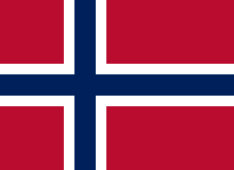

挪威
挪威國旗由深藍色十字架加上白色邊和紅色周圍。因挪威被丹麥統治，
所以國旗上的十字源自丹麥國旗的十字圖案。挪威和丹麥聯邦瓦解後，
挪威國旗留下白底十字、加上藍色十字，藍白紅代表自由、平等、博愛。
奧斯陸
挪威的首都奧斯陸，物價高昂人煙稀疏的城市，以博物館為主。可以去眾多博物館美術館，欣賞大師的名作，坐遊船遊覽峽灣美景。但人們更多是在露天茶座上喝咖啡，在公園裡散步野餐，悠閒的享受著美好時光。
特羅姆瑟
親自餵食馴鹿，體驗專人訓練的馴鹿雪橇，在很容易就可以看到極光的特羅姆瑟，與馴鹿一同一覽極光之城夢幻的北極光，除此之外還可以冰河釣魚現場烤、雪地摩托車、搭Fjellheisen纜車等。

卑爾根
童話北歐之稱卑爾根，位於雄踞松恩峽灣哈丹格峽灣出海口，依山傍海絕美港灣景色，處處可見挪威音樂家葛利格蹤跡，世界遺產布呂根彩色木屋，直達佛洛伊恩山頂登山纜車，超過一半漁貨海鮮出口到全世界。
約斯特達爾
冰河是一巨大的流動固體，遠看像是岩石般一樣的冰。搭乘登山小車，近距離接觸歐洲最大冰河約斯特達爾冰河，望向冰河顯得渺小的人們，不得不感嘆大自然的鬼斧神工，每個場景彷若明信片般的存在。
北角
北角日不落，沒有日落的永晝現象，世界地球儀成打卡景點，在午夜時分，火紅的太陽出現在海平面上難得一見的奇景，雖長有兩個半月的時間，但卻很吃天氣情況，要不然很有可能空手而歸。